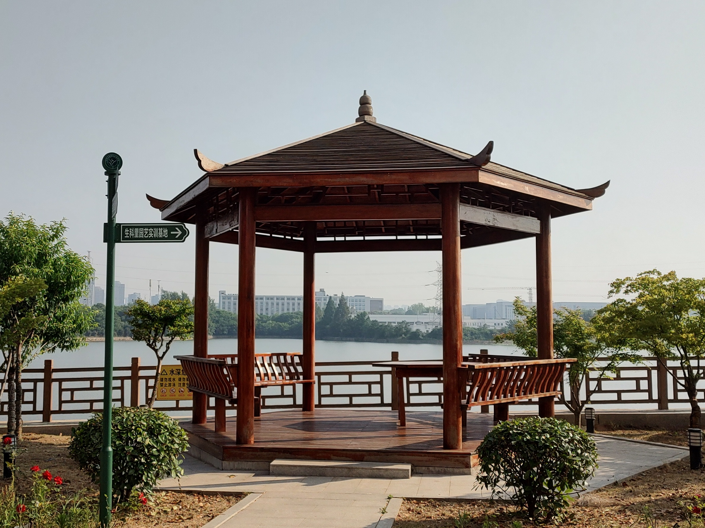

一、说明
二、考试内容
（一）模型
1.综合运用所学的曲面建模和多边形建模技术，构建学院湖边芷心亭模型。

2.在亭中添加木桌、木凳模型（自由发挥）。
3.要求布局合理，外形美观；
4.对象建模恰当、尺寸比例恰当；
5.制作场景并保存到指定文件夹中。
（二）材质
1.对模型进行材质添加;
2.将材质文件均放于指定文件夹内；
3.用Photoshop、Substance painter等软件辅助完成。
（三）灯光、摄像机、渲染
正确设置灯光，设置渲染摄像机，选择合适的角度并渲染3张静帧图片。
（四）动画
1.制作蝴蝶（纸飞机、树叶等）穿越亭子的动画效果，可以有适当的变形和夸张。
2.动画时间长度为200帧；
3.根据需要正确设置动画。
（五）需提交的文件
1.场景文件及贴图文件放在指定的文件夹压缩后上传。
2.渲染图直接上传（3张），动画视频（mp4格式）文件直接上传。
四、评分标准
序号 |
评分要点 |
说明 |
分值 |
构建模型 |
综合运用所学的曲面建模和多边形建模技术，构建模型 |
25 |
|
材质编辑 |
对模型进行材质添加 |
15 |
|
灯光、摄像机、渲染 |
正确设置灯光阴影，设置渲染摄像机，选择合适的角度并渲染至少三张静帧图片； |
15 |
|
三维动画 |
动画时间长度为200帧，根据需要正确设置动画 |
10 |
|
文件保存 |
创建文件夹，文件夹名为学号后2位+姓名拼音缩写，文件夹内包含：场景源文件、3张渲染的静帧图片、1段视频文件、子文件夹sourceimage（原图片和材质图片等） |
5 |
|
操作秩序 |
遵守考试期间纪律规则 |
5 |
|
完成结果 |
布局合理，外形美观 |
20 |
|
完成时间 |
180分钟 |
5 |